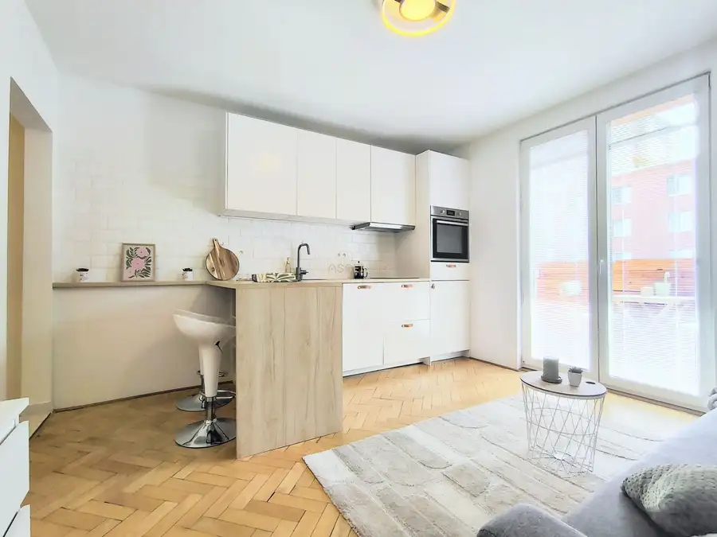
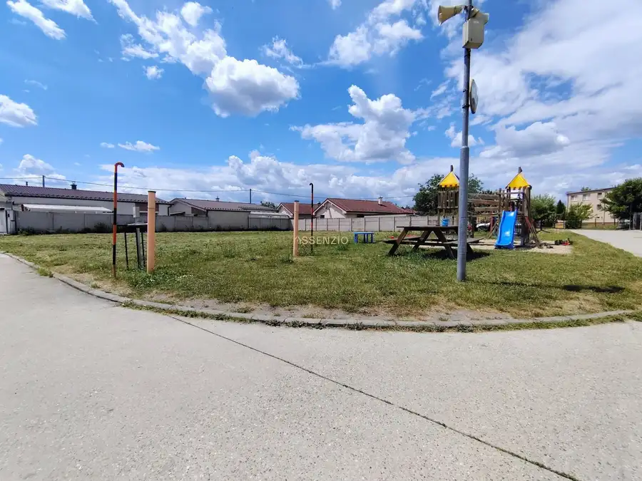
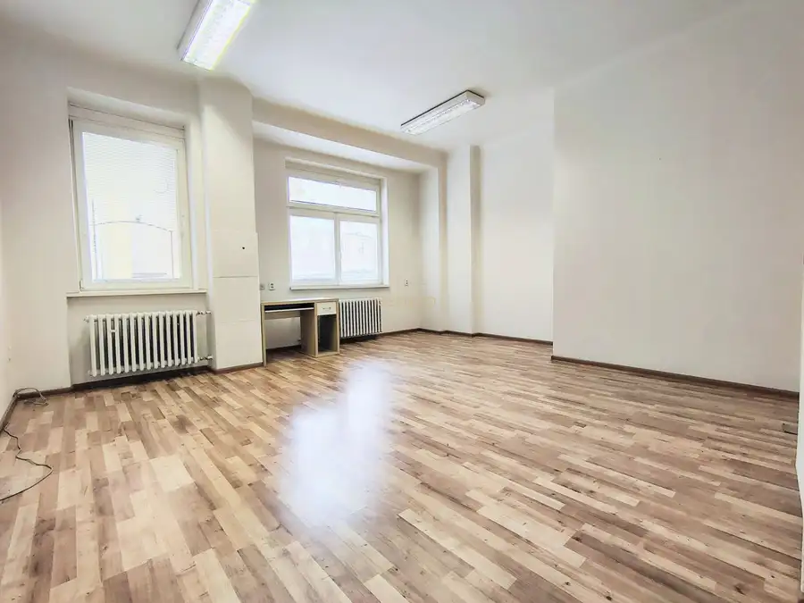

Reprezentatívne priestory (65 m²) na Hurbanovom Námestí
Staré Mesto, Bratislava
- Dispozícia3-izbový
- Plocha65 m²
- Poschodie3. z 4
- Stavčiastočne prerobený
O nehnuteľnosti
Hľadáte pre svoje podnikanie adresu, ktorá vzbudzuje dôveru a prestíž? Ponúkame na prenájom výnimočný komerčný priestor s výmerou 65 m², situovaný na vyhľadávanom Hurbanovom námestí. Priestor je pripravený k okamžitému užívaniu a ponúka maximálnu flexibilitu pre váš biznis.
Prehľad nehnuteľnosti:
Lokalita: Hurbanovo námestie, Bratislava (Centrum)
Výmera: 65 m²
Dispozícia: priestor sa skladá z 3 miestností + kuchynka a zdieľaná toaleta ešte s jedným priestorom
Prístup: 24/7 (neobmedzený)
Ideálne využitie:
Dispozícia rozdelená na tri samostatné miestnosti poskytuje dokonalé zázemie pre aktivity, ktoré si vyžadujú diskrétnosť, komfort a reprezentatívny charakter:
Manažérske a administratívne kancelárie
Advokátske, notárske či iné poradenské a konzultačné služby
Estetické štúdio, kozmetika, salón či prémiové wellness
Privátny showroom alebo kreatívny ateliér
Benefity nehnuteľnosti:
Prestížna adresa: Poloha v absolútnom centre mesta zabezpečuje vynikajúcu dostupnosť a prestíž pre vašu značku.
Priestor si môžete interiérovo upraviť a personalizovať presne podľa korporátnej identity alebo estetických predstáv vašej spoločnosti.
Transparentné náklady: Mesačné nájomné zahŕňa kompletné energie, bez skrytých poplatkov.
Komfortné zázemie: Súčasťou priestoru je praktická kuchynka pre vás a vašu klientelu.
Non-stop flexibilita: Vďaka 24/7 prístupu máte svoje sídlo k dispozícii kedykoľvek ho budete potrebovať.
Cena: 800€ / mesiac (vrátane energií)
Depozit: 500€
Provízia RK: 500€
V prípade záujmu o bližšie informácie alebo termín obhliadky ma neváhajte kontaktovať na tel. č. .
Parametre
| Úžitková plocha | 65 m² |
|---|---|
| Poschodie | 3/vyššie poschodie |
| Počet poschodí | 4 |
| Počet izieb | 3 |
| Stav | čiastočne prerobený |
| Výťah | áno |
| Postavené z | tehla |
| Zariadenie | nezariadený |
| Klimatizácia | nie |
| Energetický certifikát | nie |
| Bezbariérový prístup | nie |
| Okná | plastové |
| Dátum zverejnenia | 27. 8. 2026 |
Kde to je
Mohlo by Vás zaujímať

Byt10 209 990 €Moderné bývanie na skok od centra: 1,5-izb. byt - ihneď k nasťahovaniu Nové Mesto, Bratislava 1-izbový29 m²4. podlažie Moderný a štýlový 1,5-izbový byt po kompletnej rekonštrukcii – Československých parašutistov, Bratislava Hľadáte ideálne bývanie pre seba alebo…
Pozemok3 224 990 €Predaj - stavebný pozemok - 1132 m2 - Kostolište - Malacky Kostolište 1132 m² Predstavte si, že ráno prebudíte vo vlastnom rodinnom dome s tichým výhľadom na zelené okolie, kde počuť spev vtákov a všetko potrebné máte kúsok od…
Nebytové priestory5 Cena dohodouAdministratívny priestor v Starom Meste na prenájom – 28 m² Staré Mesto, Bratislava 28 m²1. podlažie Realitná agentúra Assenzio ponúka na prenájom priestor na 1. poschodí, ktorý je vhodný na administratívne využitie. Všeobecné informácie:…